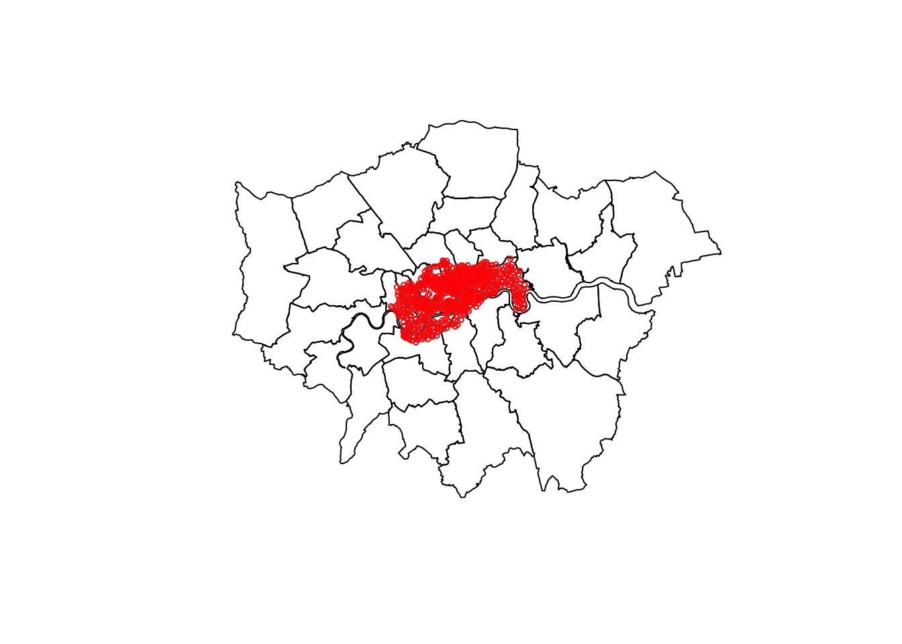
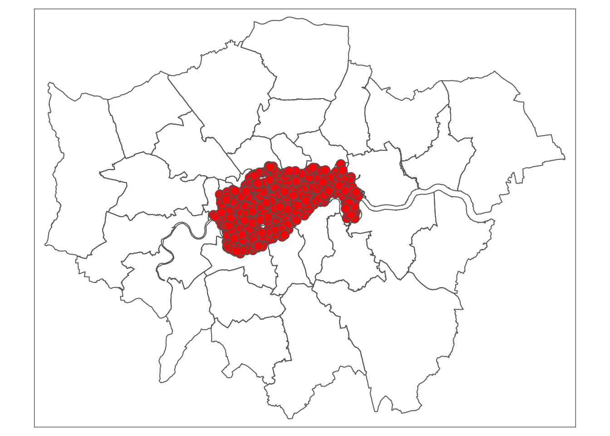

Chapter 4 Manipulating vector data
For this part, we will mostly use {sf} capabilities.
Its most spatial functions start with the st_ (for spatial type)
prefix like in PostGIS.
We will use vector data from the {spData} package. We will also use functions from the {dplyr} package as {sf} objects are data frames compatible with the Tidyverse philosophy.
## here() starts at /Users/runner/work/foss4g2022-getting-started-rspatial/foss4g2022-getting-started-rspatial4.1 Read spatial data
{sf} provides the read_sf() and write_sf() functions to access geospatial files.
They can operate with any vector driver provided by GDAL.
We will use the data from the {spData} package.3 Let’s see what it contains:
## [1] "auckland.dbf" "auckland.shp" "auckland.shx"
## [4] "baltim.dbf" "baltim.shp" "baltim.shx"
## [7] "boston_tracts.dbf" "boston_tracts.prj" "boston_tracts.shp"
## [10] "boston_tracts.shx" "columbus.dbf" "columbus.shp"
## [13] "columbus.shx" "cycle_hire_osm.geojson" "cycle_hire.geojson"
## [16] "eire.dbf" "eire.shp" "eire.shx"
## [19] "NY8_bna_utm18.gpkg" "NY8_utm18.dbf" "NY8_utm18.prj"
## [22] "NY8_utm18.shp" "NY8_utm18.shx" "sids.dbf"
## [25] "sids.shp" "sids.shx" "wheat.dbf"
## [28] "wheat.shp" "wheat.shx" "world.dbf"
## [31] "world.gpkg" "world.prj" "world.shp"
## [34] "world.shx"We will work on cycle hires points in London, so let’s start by loading that data.
4.1.1 Cycle hire dataset
## Simple feature collection with 742 features and 5 fields
## Geometry type: POINT
## Dimension: XY
## Bounding box: xmin: -0.2367699 ymin: 51.45475 xmax: -0.002275 ymax: 51.54214
## Geodetic CRS: WGS 84
## # A tibble: 742 × 6
## id name area nbikes nempty geometry
## <int> <chr> <chr> <int> <int> <POINT [°]>
## 1 1 River Street Clerkenwell 4 14 (-0.1099705 51.52916)
## 2 2 Phillimore Gardens Kensington 2 34 (-0.1975742 51.49961)
## 3 3 Christopher Street Liverpool S… 0 32 (-0.08460569 51.52128)
## 4 4 St. Chad's Street King's Cross 4 19 (-0.1209737 51.53006)
## 5 5 Sedding Street Sloane Squa… 15 12 (-0.156876 51.49313)
## 6 6 Broadcasting House Marylebone 0 18 (-0.1442289 51.51812)
## 7 7 Charlbert Street St. John's … 15 0 (-0.1680743 51.5343)
## 8 8 Lodge Road St. John's … 5 13 (-0.1701345 51.52834)
## 9 9 New Globe Walk Bankside 3 16 (-0.09644075 51.50739)
## 10 10 Park Street Bankside 1 17 (-0.09275416 51.50597)
## # … with 732 more rows
## # ℹ Use `print(n = ...)` to see more rowsHere we can see a couple of functions :
read_sf()is the reading function from {sf}system.file()is a function that allow us to look for data in packages, independently of the operating system
By default, {sf} provides informations when loading the dataset.
We can see it contains 742 features and 5 fields.
It has points with lat/lon coordinates (we can see it through information about its CRS: Geodetic CRS: WGS 84).
{sf} also shows the bounding box of our object.
Here is the description of this dataset from its documentation:
cycle_hire dataset
Description: Points representing cycle hire points accross London.
Format:
- id Id of the hire point
- name Name of the point
- area Area they are in
- nbikes The number of bikes currently parked there
- nempty The number of empty places
- geometry sfc_POINT
We can see how many bike are parked, the count of empty slots but not the total amount of bike slots.
Let’s create a new slots column for this with mutate() from {dplyr}.
Now, let’s load a polygon dataset, in this case London’s boroughs stored in the lnd dataset.
4.1.2 Boroughs of London
This dataset is stored in an R data format so the loading is different.
## Simple feature collection with 33 features and 7 fields
## Geometry type: MULTIPOLYGON
## Dimension: XY
## Bounding box: xmin: -0.5103751 ymin: 51.28676 xmax: 0.3340155 ymax: 51.69187
## Geodetic CRS: WGS 84
## First 10 features:
## NAME GSS_CODE HECTARES NONLD_AREA ONS_INNER SUB_2009
## 1 Kingston upon Thames E09000021 3726.117 0.000 F <NA>
## 2 Croydon E09000008 8649.441 0.000 F <NA>
## 3 Bromley E09000006 15013.487 0.000 F <NA>
## 4 Hounslow E09000018 5658.541 60.755 F <NA>
## 5 Ealing E09000009 5554.428 0.000 F <NA>
## 6 Havering E09000016 11445.735 210.763 F <NA>
## 7 Hillingdon E09000017 11570.063 0.000 F <NA>
## 8 Harrow E09000015 5046.330 0.000 F <NA>
## 9 Brent E09000005 4323.270 0.000 F <NA>
## 10 Barnet E09000003 8674.837 0.000 F <NA>
## SUB_2006 geometry
## 1 <NA> MULTIPOLYGON (((-0.3306791 ...
## 2 <NA> MULTIPOLYGON (((-0.06402124...
## 3 <NA> MULTIPOLYGON (((0.01213094 ...
## 4 <NA> MULTIPOLYGON (((-0.2445624 ...
## 5 <NA> MULTIPOLYGON (((-0.4118327 ...
## 6 <NA> MULTIPOLYGON (((0.1586928 5...
## 7 <NA> MULTIPOLYGON (((-0.404072 5...
## 8 <NA> MULTIPOLYGON (((-0.404072 5...
## 9 <NA> MULTIPOLYGON (((-0.1965687 ...
## 10 <NA> MULTIPOLYGON (((-0.1998964 ...We can see this dataset has 33 features and 7 fields, also in lat/lon coordinates. The geometry type i, however, different: MULTIPOLYGON.
ldn dataset
The boroughs of London
Description : Polygons representing large administrative zones in London
Format:
- NAME Borough name
- GSS_CODE Official code
- HECTARES How many hectares
- NONLD_AREA Area outside London
- ONS_INNER Office for national statistics code
- SUB_2009 Empty column
- SUB_2006 Empty column
- geometry sfc_MULTIPOLYGON
Source : https://github.com/Robinlovelace/Creating-maps-in-R
In order to ease spatial calculations, let’s reproject them.
4.2 Reprojection
The Ordnance Survey National Grid is the official one for Great Britain. Its SRID is EPSG:27700.
cycle_hire_27700 <- st_transform(cycle_hire, crs = "EPSG:27700")
london_27700 <- st_transform(lnd, crs = "EPSG:27700")We used st_transform() for the reprojection operation.
We can also use st_crs() to check the CRS definition of our objects.
Now, we can create a quick map using the the plot() function.
This function is part of base R.
plot(london_27700$geometry) # we just want to plot the geometry column
plot(cycle_hire_27700$geometry,
col = "red", # color
cex = 0.5, # size of symbol
add = TRUE) # important parameter to create multilayer plots
We could also use {tmap} here:
tm_shape(london_27700) +
tm_borders() +
tm_shape(cycle_hire_27700) +
tm_symbols(size = 0.5, col = "red")
4.3 Joins
We can use two ways to link those datasets together, by attributes (as they share their area name (area and NAME)) or spatially.
For the sake of the exercise, let’s do both.
4.3.1 Join by attributes
Let’s join them with a inner join to see how many corresponds.
inner_join(cycle_hire_27700,
st_drop_geometry(london_27700), # we don't need the geometry here
by = c( "area" = "NAME")
)## Simple feature collection with 33 features and 12 fields
## Geometry type: POINT
## Dimension: XY
## Bounding box: xmin: 523978 ymin: 174408 xmax: 537912.7 ymax: 182972.5
## Projected CRS: OSGB 1936 / British National Grid
## # A tibble: 33 × 13
## id name area nbikes nempty geometry slots GSS_CODE
## <int> <chr> <chr> <int> <int> <POINT [m]> <int> <fct>
## 1 80 Webber Str… Sout… 10 14 (531832.1 179680.3) 24 E09000028
## 2 108 Abbey Orch… West… 1 27 (529756.5 179341.1) 28 E09000033
## 3 118 Rochester … West… 12 1 (529528.7 179079.5) 13 E09000033
## 4 221 Horseferry… West… 12 3 (529880 178976) 15 E09000033
## 5 240 Colombo St… Sout… 9 5 (531568.5 180203.8) 14 E09000028
## 6 259 Embankment… West… 0 29 (530351.7 180115.2) 29 E09000033
## 7 267 Regency St… West… 7 12 (529765.2 178666.4) 19 E09000033
## 8 281 Smith Squa… West… 4 12 (530077.3 179091.2) 16 E09000033
## 9 299 Vincent Sq… West… 6 11 (529433.2 178872.2) 17 E09000033
## 10 302 Putney Pier Wand… 18 10 (523978 175723.3) 28 E09000032
## # … with 23 more rows, and 5 more variables: HECTARES <dbl>, NONLD_AREA <dbl>,
## # ONS_INNER <fct>, SUB_2009 <fct>, SUB_2006 <fct>
## # ℹ Use `print(n = ...)` to see more rows, and `colnames()` to see all variable namesWe can see that only 33 features matched. That’s poor, let’s try this spatially.
4.3.2 Spatial join
For this, we will try to provide a GSS_CODE for all cycle hire points.
We will regroup the data afterwards.
For this, we will select only the GSS_CODE column from london_27700 with the
select() function from {dplyr}, the geometry will follow.
Now if we look at our dataset, there is a GSS_CODE column.
## [1] "id" "name" "area" "nbikes" "nempty" "geometry" "slots"
## [8] "GSS_CODE"How many points doesn’t have a GSS_code?
## Simple feature collection with 1 feature and 7 fields
## Geometry type: POINT
## Dimension: XY
## Bounding box: xmin: 534188 ymin: 180210.4 xmax: 534188 ymax: 180210.4
## Projected CRS: OSGB 1936 / British National Grid
## # A tibble: 1 × 8
## id name area nbikes nempty geometry slots GSS_CODE
## * <int> <chr> <chr> <int> <int> <POINT [m]> <int> <fct>
## 1 134 Wapping Hig… Wapp… 20 0 (534188 180210.4) 20 <NA>Only one, that’s more better than before! Our knowledge of London is not enought to fix this. But that is not prevening us from the next steps.
Now, to paraphrase Anita Graser: “Aggregate all the things!”
4.4 Aggregation
4.4.1 Count
# remove NAs
cycle_hire_clean <- filter(cycle_hire_27700, !is.na(GSS_CODE))
# let's put geometry aside
cycle_hire_clean <- st_drop_geometry(cycle_hire_clean)
# group data by GSS_CODE
cycle_hire_grouped <- group_by(cycle_hire_clean, GSS_CODE)
# count
cycle_hire_by_area <- tally(cycle_hire_grouped, name = "count", sort= TRUE) # Aggregate
cycle_hire_by_area## # A tibble: 11 × 2
## GSS_CODE count
## <fct> <int>
## 1 E09000033 171
## 2 E09000030 117
## 3 E09000020 90
## 4 E09000032 59
## 5 E09000013 58
## 6 E09000007 57
## 7 E09000022 46
## 8 E09000028 40
## 9 E09000019 37
## 10 E09000001 35
## 11 E09000012 31tally() is equivalent to df %>% summarise(n = n())
4.4.2 Sum
# count cycle stations
cycle_hire_by_area_sum <- summarise(
cycle_hire_grouped, # we reused grouped data
sum = sum(nbikes), # sums the number of bikes of each group
count = n() # count records in each group
)
cycle_hire_by_area_sum## # A tibble: 11 × 3
## GSS_CODE sum count
## <fct> <int> <int>
## 1 E09000001 46 35
## 2 E09000007 518 57
## 3 E09000012 606 31
## 4 E09000013 754 58
## 5 E09000019 398 37
## 6 E09000020 872 90
## 7 E09000022 871 46
## 8 E09000028 756 40
## 9 E09000030 1795 117
## 10 E09000032 1083 59
## 11 E09000033 1336 171We could have use the base function aggregate() which works with sf objects.
aggregate(cycle_hire_27700["nbikes"],
by = list(cycle_hire_27700$"GSS_CODE"),
FUN = sum,
na.rm = TRUE)## Simple feature collection with 11 features and 2 fields
## Attribute-geometry relationship: 0 constant, 1 aggregate, 1 identity
## Geometry type: MULTIPOINT
## Dimension: XY
## Bounding box: xmin: 522502 ymin: 174408 xmax: 538733.2 ymax: 184421
## Projected CRS: OSGB 1936 / British National Grid
## First 10 features:
## Group.1 nbikes geometry
## 1 E09000001 46 MULTIPOINT ((531116.1 18135...
## 2 E09000007 518 MULTIPOINT ((528392.6 18362...
## 3 E09000012 606 MULTIPOINT ((532312.6 18306...
## 4 E09000013 754 MULTIPOINT ((522502 178727)...
## 5 E09000019 398 MULTIPOINT ((530339.9 18340...
## 6 E09000020 872 MULTIPOINT ((523651 180842)...
## 7 E09000022 871 MULTIPOINT ((528837 176040)...
## 8 E09000028 756 MULTIPOINT ((531235.8 17911...
## 9 E09000030 1795 MULTIPOINT ((533364.4 18174...
## 10 E09000032 1083 MULTIPOINT ((523978 175723....If we want to represents our data with proportional symbols, we might want to create centroids. {sf} provides two functions in order to do that:
st_centroid()st_point_on_surface()
st_point_on_surface() creates a random point inside a polygon.
Using this assures that every point is in its polygon
That can be useful for irregular shapes where the centroid might be outside the shape.
But those are not centroids.
4.5 Centroids
# only keep useful columns
boroughs <- select(london_27700, NAME, GSS_CODE)
# compute centroids
boroughs_centroids <- st_centroid(boroughs)## Warning in st_centroid.sf(boroughs): st_centroid assumes attributes are constant
## over geometries of xYou can also do buffers and other geometrical operations like st_union() (Figure 4.1) to merge geometries.
Figure 4.1: Spatial equivalents of logical operators (source: Geocomputation with R)
4.6 Geometric binary predicates
{sf} provides numerous geometric binary predicates that can be used with the intersection function.
st_intersects()st_disjoint()st_touches()st_crosses()st_within()st_contains()st_contains_properly()st_overlaps()st_equals()st_covers()st_covered_by()st_equals_exact()st_is_within_distance()
You can use it alone or together with st_join().
For example, if we want to get the cycle hires contained in the borough of Wandsworth, we will do it like this:
Wandsworth <- filter(london_27700, NAME == "Wandsworth")
(Wandsworth_bike_stations <- st_contains(Wandsworth, cycle_hire_27700) )## Sparse geometry binary predicate list of length 1, where the predicate
## was `contains'
## 1: 293, 576, 581, 587, 588, 590, 592, 594, 596, 598, ...That will return a list of cycle hire points id.
In contrary, if we want to find in which borough the hire point with id 614 is, we can use the opposite function st_within():
cycle_hire_614 <- filter(cycle_hire_27700, id == "614")
cycle_hire_614_borough <- st_within(cycle_hire_614, london_27700) # borough at index 22
cycle_hire_614_borough## Sparse geometry binary predicate list of length 1, where the predicate
## was `within'
## 1: 22To get the borough data, there is some more work to do.
## Simple feature collection with 1 feature and 7 fields
## Geometry type: MULTIPOLYGON
## Dimension: XY
## Bounding box: xmin: 521054.9 ymin: 170381.5 xmax: 530193.7 ymax: 177893.4
## Projected CRS: OSGB 1936 / British National Grid
## NAME GSS_CODE HECTARES NONLD_AREA ONS_INNER SUB_2009 SUB_2006
## 22 Wandsworth E09000032 3522.022 95.6 T <NA> <NA>
## geometry
## 22 MULTIPOLYGON (((523489.6 17...4.7 Saving results
In the first part, we saw that we can read spatial vector data but we can also write it!
4.7.1 Writing data
To write data, we will use the st_write() function.
It takes the data source name (dsn) as mandatory argument, {sf} will try to find the good driver from the extension (here it is .gpkg for GeoPackage).
As we want to save it to GeoPackage4, we also need to provide a layer name: london_boroughs_27700. Repeat for all data you want to save.
write_sf(
obj = left_join(london_27700, cycle_hire_by_area_sum), # object to write
dsn = here("foss4g_R_workshop.gpkg"), # destination file
layer = "london_boroughs_27700", # layer name
append = FALSE) # options## Joining, by = "GSS_CODE"write_sf(
left_join(boroughs_centroids , cycle_hire_by_area_sum),
dsn = here("foss4g_R_workshop.gpkg"),
layer = "boroughs_centroids_27700",
append = FALSE)## Joining, by = "GSS_CODE"write_sf(
obj = left_join(cycle_hire_27700, cycle_hire_by_area_sum),
dsn = here("foss4g_R_workshop.gpkg"),
layer = "cycle_hire_27700",
append = FALSE)## Joining, by = "GSS_CODE"We used the here() function as it preserve the project file hierarchy.
It works better in RStudio but it is still useful with Jupyter notebooks.
The dataset where joined by their GSS_CODE. You can specify the “by” statement, but for the sake of readability, it is not show here.
The append = FALSE ensure you can write on existing layer, it is optional.
## [1] "/Users/runner/work/foss4g2022-getting-started-rspatial/foss4g2022-getting-started-rspatial"## [1] "_book"
## [2] "_bookdown.yml"
## [3] "_main_files"
## [4] "_main.Rmd"
## [5] "_output.yml"
## [6] "01-intro.Rmd"
## [7] "02-data-handling.Rmd"
## [8] "03-intro-to-rspatial.Rmd"
## [9] "04-making-maps.Rmd"
## [10] "05-manipulating-vector-data.Rmd"
## [11] "06-manipulating-raster-data.Rmd"
## [12] "07-summary.Rmd"
## [13] "08-references.Rmd"
## [14] "book.bib"
## [15] "data"
## [16] "DESCRIPTION"
## [17] "figs"
## [18] "foss4g_R_workshop.gpkg"
## [19] "FOSS4G2022_Getting_started_R_Rspatial.Rproj"
## [20] "images"
## [21] "index.Rmd"
## [22] "my_map2.html"
## [23] "my_map2.pdf"
## [24] "my_map2.png"
## [25] "packages.bib"
## [26] "preamble.tex"
## [27] "README.md"
## [28] "style.css"4.7.2 Check data
{sf} provides an st_layers() function that is useful to see the content of a dataset.
## Driver: GPKG
## Available layers:
## layer_name geometry_type features fields
## 1 london_boroughs_27700 Multi Polygon 33 9
## 2 boroughs_centroids_27700 Point 33 4
## 3 cycle_hire_27700 Point 742 9
## crs_name
## 1 OSGB 1936 / British National Grid
## 2 OSGB 1936 / British National Grid
## 3 OSGB 1936 / British National GridMore details on the datasets here: https://cran.r-project.org/web/packages/spData/spData.pdf↩︎
Because GeoPackage are cool !↩︎